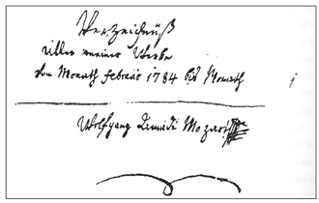

K. ve Diğerleri
Onu her yerde görüyoruz: Afişlerde, Mozart’ın eserlerinin yer aldığı etkinliklerin program listelerinde, kısacası Mozart adının geçtiği her yerde var. Evet, Ludwig von Köchel’in yaptığı dizinden (Köchel Verzeichnis) bahsediyoruz. Kısaca K. harfi ile gösterilir ve ardından da 1 ve 626 arasında bir sayı gelir. Örneğin K. 1 küçük Mozart’ın ilk eseridir. Yarım kalan eseri Requiem’in dizindeki yeri K. 626’dır.
Bugün hâlâ kullandığımız bu düzenlemeyi Dr. Ludwig Ritter von Köchel’e borçluyuz. Soyisminin önündeki “von” unvanı kendisine kırk iki yaşındayken liyakat nişanı olarak verilmiştir. Aslında doktor unvanı almış bir hukukçudur ve botanik ve mineraloji alanına ilgi duymuştur. Aynı zamanda oldukça da iyi bir hocadır. Kısacası farklı yeteneklere sahip biridir. Daha otuz iki yaşındayken yüksek dereceli imparatorluk memuru olur ve daha sonra da arşidükün dört çocuğuna Viyana’da ders verir. Kendisi eğitim müdürlüğüne kadar yükselebilecek durumdadır, ancak benimsediği “özgürlükçü düşünce şekli” onun Salzburg’daki kraliyet eğitim müdürlüğünde çalışmasına manidir. İki yıla yakın bir süre memuriyet yaptıktan sonra bu görevden ayrılır. Düşünen ve eleştiren bir bilim adamı olarak müfettişlik yapmak ona göre değildir.
Köchel zamanla müziğe yönelmeye başlar. Mozart konusunda müzikbilimsel bir sezgisi olduğunu keşfeder. Müzik konusunda araştırma ve koleksiyon da yapan Köchel, Otto Jahn’ın 1856 yılında yayımlanan Mozart biyografisinden çok etkilenir. Genç Köchel şaşkınlıkla araştırmalarına devam eder, kendi imkânlarıyla tüm Avrupa’yı dolaşır ve Breitkopf Yayıncılık’a Mozart’ın tüm eserlerini yayımlama teklifi götürür. 1876’da yayımlanan Mozart’ın Bütün Eserleri için 15.000 gulden “mali yardım” yapar. Yaptığı araştırmaları, çalışmaları, elindeki koleksiyonları ve el yazmalarını daha sonra kütüphanelere, okullara ve enstitülere miras olarak bırakır. 3 Haziran 1877’de Viyana‘da ölür. Cenazesinde onuruna Requiem K. 626 çalınır.
Doğa bilimleri eğitimi alan Köchel, Mozart’ın eserlerini büyük bir itinayla derler. Bu çalışma sırasında elbette kendisinden önce yapılan çalışmalardan da faydalanır:
● Mozart’ın babası, 1768’de büyük bir dikkatle bir eser listesi hazırlamış, ilk piyano eserinden itibaren Mozart’ın eserlerini kayda geçirmiştir. Leopold Mozart bu listeyi büyük olasılıkla imparatora sunduğu dilekçeye de eklemiş, o sırada on üç yaşında birinin opera yazamayacağını söyleyerek Mozart’ın ilk eserini küçümseyip gülüşen dalkavuklar karşısında oğlunu savunmak için esip gürlemiştir. Bastien ve Bastienne opereti gerçekten de Viyana’da boykot edilmiş ve sahnelenmemiştir.
● Wolfgang Amadeus Mozart’ın hazırladığı 9 Şubat 1784-15 Kasım 1791 arası “Tüm Eserlerim” başlıklı dizin.

● Stadler-Nissen ve André’nin miras listesi.
● Fuchs, Gleissner, Breitkopf, Jahn gibi isimlerin yaptığı bazı ön çalışmalar.
● Mozart mektuplarından alınan sayısız veri.
Ancak büyük sorunlarla da karşılaşmıştır. Bunun nedeni:
● Eserlerin yaklaşık üçte biri basılmamıştır.
● Orijinal olan ile olmayanı ayırt etmek çoğunlukla çok zordur.
● Bazı eserlerin üzerinde tarih yoktur.
● Sadece tamamlanmış eserler kabul edilmektedir.
● Atlanan ya da açığa çıkmayan eserler hakkında bilgi yoktur.
Köchel’in ardından gelenler Mozart’a ait yeni eserler bulurlar, orijinal olanlar ile olmayanların ayırt edilmesi gerekir. Köchel dizininin 1905 yılında yapılan ikinci basımında on orijinal olmayan eser listeden çıkarılır, yerine on bir yeni eser eklenir. 1956’da jübile yılında on dört küçük piyano eseri listeye alınır. Bunların tümü daha önce listede olan Menuett K. 1’den öncesine aittir. Bu nedenle yeni bir numaralandırma yapılmaz, yeni bulunan eserler 1a’dan 1d’ye kadar numaralandırılır. 1862’deki basıma yazdığı önsözde Köchel şöyle der:
Umarım bu çalışmanın yayımlanması, bugüne dek gün yüzüne çıkmayan bazı şeylerin gizlendikleri yerden çıkmasına vesile olur; elinde onun imzasını, nadir nüshaları ve suretlerini bulunduran herkesten bunları, dizini tamamlamak için yayımcıyla ya da yazarla paylaşmalarını rica ediyorum.
Bu, Mozart’ın izini sürmeye bir çağrıdır!
Mozart hayatını kaybettikten sonra ardında beklenenden çok daha fazla nota bıraktığı ortaya çıkar. Bu durumu, babası Leopold’ün ve Viyana’daki on bir taşınmanın her birinde babasının el yazmalarını oradan oraya taşıyan oğlunun düzen anlayışına borçluyuz. Eşi Constanze de el yazmalarının bir arada tutulmasında etkili olmuştur. Büyük olasılıkla bazı el yazmalarını elinde tutan görümcesi Nannerl’in şüphelerini desteleyecek hiçbir kanıt yoktur. Constanze verilerin düzenli bir biçimde toplanmasını sağlar. Ona düzenleme sırasında Abbé Maximilian Stadler yardımcı olur. Bay Stadler şöyle yazar:
O [Constanze] benden el yazmalarını düzenlemek için yardım istedi. Onları adresime göndermek istedi. Bu isteğini reddettim ve ona ... kendisini ziyaret ederek, kendisiyle birlikte yaşayan Bay von Nyssen’in eşliğinde merhumun ardında bıraktığı müzikal mirasın tümünü inceleyeceğime, düzenleyerek bir katalog oluşturacağıma söz verdim. Sözümü tutmam uzun sürmedi... Daha sonra Bay André’nin tüm mirası satın aldığı herkesçe biliniyor.
Mozart’ın geride bıraktığı müzikal mirasın dökümü 1798’de tamamlanır. Bundan sonra iki yayıncının Breitkopf (Leipzig) ve André’nin (Offenbach) çekişmesi başlar. Constanze ikisiyle de görüşür. Resmi olarak ilk Breitkopf ile iletişime geçer. Yayıncı kararsızdır. Constanze iki kez ültimatom gönderir, yayıncı hâlâ bir karara varamamıştır. Bu arada yayıncı André, Constanze’yi Viyana’da ziyaret ederek mirası inceler. André 9 Ocak 1800 tarihinde üç bin yüz elli gulden karşılığında tüm eserleri alır. Constanze o güne dek ele geçirilemeyen eserlerin bulunması için yardımcı olacağına söz verir. Şüphesiz önemli bestelerinden birkaçı kayıptır. Mozart’ın kız kardeşi Nannerl miras kavgasından sonra birkaç şeyi kendine saklamıştır, Constanze kocasının ölümünden hemen sonra sekiz parçayı Berlin’de bir yere satmak zorunda kalmıştır, karşılığında sekiz yüz gulden aldığı düşünülecek olursa bunlar büyük olasılıkla önemli parçalardır.
On dört yıl sonra J. A. André, Mozart eserlerinin tümünü satmak ister. Mirasın tümünü Viyana, Berlin ve Londra’daki imparatorluk saraylarına teklif eder. André 1842 yılında öldüğünde miras yedi vârisi arasında bölünür. Bunlar altı oğlu ve Viyana’da yaşayan piyano üreticisi üvey oğlu J. B. Streicher’dır. Streicher diğerlerinin yanı sıra Don Giovanni partisyonunun da sahibi olur. Eserler farklı yerlere satılarak dağılır, bir kısmını bulmak bir daha mümkün olmaz. İzleri hâlâ sürülüyor. Neyse ki Berlin’deki kraliyet kütüphanesi yorulmadan iz sürüp eserleri bir araya getiren Köchel için el yazmalarının büyük bir kısmını yüz otuz sekiz gümüş para karşılığında almıştır.
Bu büyük arayış, düzenleme ve sıralama bugün hâlâ devam ediyor. Birçok yeni etiketleme ile liste bugün bile yenileniyor. Üçüncü basımında (Leipzig 1980) ekler kısmında üç yüzden fazla eserin tarihi yeniden düzenlenmiş, orijinal olup olmadıklarına göre sıralanmış, o dönem kayıp olup da sonradan bulunan eserler eklenmiştir. Büyük Köchel’in ruhu şad olsun! O kadar büyük bir titizlikle çalışmıştır ki, bugün elde edilen çok sayıda yeni bilgiye rağmen onun dizini, kullandığı kronolojik sıraya göre verdiği rakamlarla birlikte dünyada kabul görmüştür ve hâlâ kullanılmaktadır.